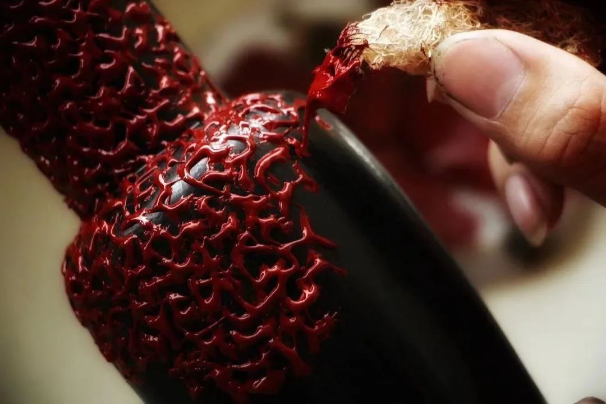

视频观看
制作流程
漆器制作流程主要包含：制胎、裱布、刮灰、吃漆、髹漆、装饰纹理、推磨抛光等。其中打磨和荫干贯穿于漆器制作的所有步骤，十分考验制作人的耐心。
1.制作木胎
制作漆器，首先要有胎体，也称为胎骨，常见的底胎有，木胎、金属胎、皮胎，脱胎（夹纻胎）、竹胎、陶胎，纸胎，绳胎等。以生活中使用比较广泛的木胎为例，在选材上，常用梨木、榆木等硬木，华贵高档胎体则用楠木、红木、紫檀，选材之后再进行整平打磨处理，清理表面。
裱布为防止胎体开裂，保证漆器能长久保存，中国匠人发挥各种奇思妙想，想出裱布的办法，用夏布按照胎体的尺寸剪好。用麦漆贴在木胎上。整个胎体都要完整贴好，之后再进行荫干。
2.刮灰
给漆器上一层涂层，行话称为“漆底子”。漆底子的腻子用生漆和各种调料调和而成，一般分为粗灰、中灰、细灰。调好腻子之后，按照灰料粗细，先涂粗灰，再涂中灰，细灰。涂抹时用刮板将涂料刮涂在胎体上，要求均匀平针，厚度一致。每道荫干之后进行打磨。
3.吃漆
也称“吃底漆”，在刮灰的步骤完成之后，将漆液稀释刷涂在灰面荫干，以增加表面的密度，让上层漆面呈现更好的光泽。
4.髹漆
大漆进行精炼调制，加上樟脑油，均匀调和之后，根据不同的胎底材质，刷漆的层数也就不同，有的产品只需要需要上几层，有的需要上几十层，每层都需要进行阴干处理。
5.装饰纹理
对漆器表面进行艺术加工让漆器以不同的动人表现形式展示到人们面前。常见漆器工艺为：素漆、百宝嵌、堆漆、雕漆、填漆、剔犀、描漆、描金、莳绘、箔绘、漆绘、螺钿镶嵌、蛋壳镶嵌、犀皮、款彩、戗金、金银平脱、罩漆磨现等。
6.推磨抛光
漆器最后需要进行推磨抛光，用植物油和细灰，用手掌在漆面进行无数次的推擦，直到漆面皎洁如镜，润泽如玉。经过反复不断的打磨，漆器才能保持平整光洁。层层工序下来，一件漆器，短则耗时数月，多则几年。经过层层加工，漆器能耐腐、耐磨、耐酸、耐热、耐溶剂，同时具有隔水性，绝缘性高，富有光泽。大漆调制出的各种色彩，能长长久久光艳动人。
7.阴干
漆器阴干一般用 “荫房” 设备，荫干就在其中完成，要求湿度65% - 85℃左右，温度20 - 25℃左右，每上一层灰都要进入荫房阴干，才能再上下一层。随着时间的推移，漆器开始逐渐苏醒。色泽的变化让人感受到惊心动魄之美。